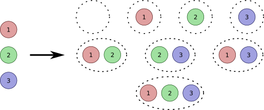

Vamos paso a paso. Ya has aprendido la diferencia entre un experimento aleatorio y otro determinista, nosotros nos vamos a centrar en los experimentos aleatorios, ya que son los que estudia la Probabilidad. También vamos a necesitar una serie de definiciones nuevas, son conceptos necesarios para poder empezar a trabajar.
Te lo cuento...
Espacio muestral
El espacio muestral de un experimento aleatorio es el conjunto de todos los resultados posibles del experimento. Se nombra con la letra E.
Partimos del experimento aleatorio: lanzar un dado. El espacio muestral estaría formado por todos los posibles resultados que puedo obtener al lanzar un dado, es decir, el espacio muestral sería
¿Cuál sería el espacio muestral del experimento aleatorio consistente en lanzar dos monedas distintas?
Punto muestral
Es cada uno de los elementos que forman el espacio muestral.
En el experimento aleatorio consistente en seleccionar al azar una ficha de dominó, cada una de las fichas del dominó sería un punto muestral.
Suceso. Tipos de sucesos
Es cada uno de los subconjuntos del espacio muestral. Se les nota con una letra mayúscula y se pueden expresar de forma explícita o mediante un enunciado.
En el experimento lanzar un dado, un ejemplo de un suceso sería A= "Obtener número impar"
Hay diferentes tipos de sucesos:
- Suceso elemental: está formado por un solo punto muestral. Por ejemplo, A= "sacar un 1 al lanzar un dado"
- Suceso compuesto: está formado por varios puntos muestrales. Por ejemplo, A= "sacar un número par al lanzar un dado"
- Suceso cierto o seguro: es aquel que se realiza siempre, por tanto, estará formado por todos los puntos muestrales del experimento y coincidirá con el espacio muestral.
- Suceso imposible: el que no se realiza nunca, por lo tanto, no tiene ningún punto muestral. Se representa por el símbolo
- Suceso complementario: Si tenemos un suceso A de un experimento aleatorio, el suceso complementario es el que se realiza cuando no se realiza A. Se puede utilizar estas dos notaciones para el suceso complementario
El suceso complementario del suceso "sacar par al lanzar un dado" será "sacar impar".
Espacio de sucesos
Es el conjunto de todos los sucesos de un experimento aleatorio. Se nombra con la letra S. En el espacio de sucesos siempre vamos a considerar el suceso imposible.

Si el experimento aleatorio es seleccionar un número del 1 al 3, el espacio de sucesos sería el anterior.
Un suceso A se realiza o se verifica, si al efectuar una prueba del experimento aleatorio obtenemos como resultado uno de los puntos muestrales que componen el suceso A.
En el experimento aleatorio de lanzar un dado, vamos a considerar el suceso A ="salir impar" o lo que es lo mismo,
Si lanzamos el dado y sale un 5, nuestro experimento se habrá realizado. Pero si lanzamos el dado y obtenemos un 2, entonces el experimento no se habrá realizado, no se ha verificado.

Definición:
Comprobar o examinar la verdad de algo.
Ejemplo:
Siempre hay que verificar la información.

{kind=link}
{kind=link}
{kind=link}